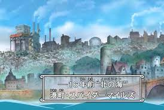
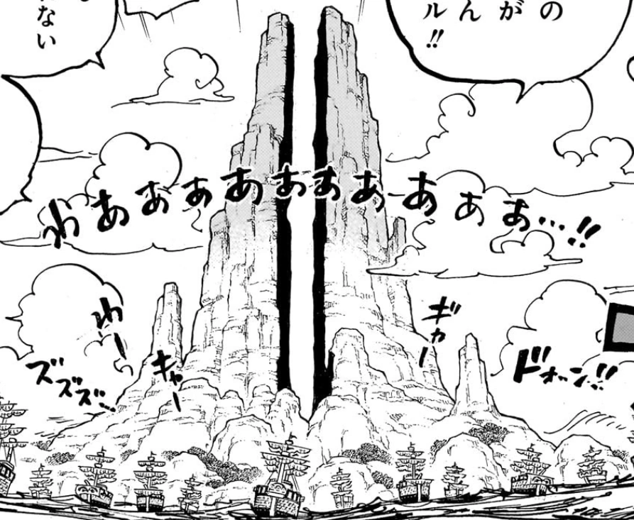
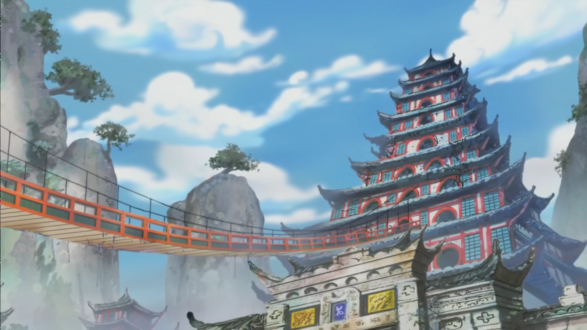

West Blue
West Blue (西の海ウエストブルー, Uesuto Burū) est l'une des 5 zones maritimes principales du Monde de One Piece. Elle est l'une des mers composant ce monde, avec East Blue, South Blue, North Blue et Grand Line. Elle est séparée de Grand Line par Calm Belt.
Lieux se trouvant à East Blue
 |
 |
|
 |  |
|---|---|---|---|---|
| Royaume d'Ilisia | Ohara | Île de Toroa | Las Camp | Thriller Bark (Anciennement) |
|  |  | |
||
| God Valley | Pays des Fleurs | Royaume de Ballywood |